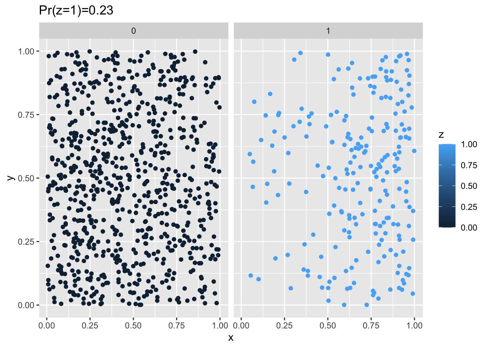
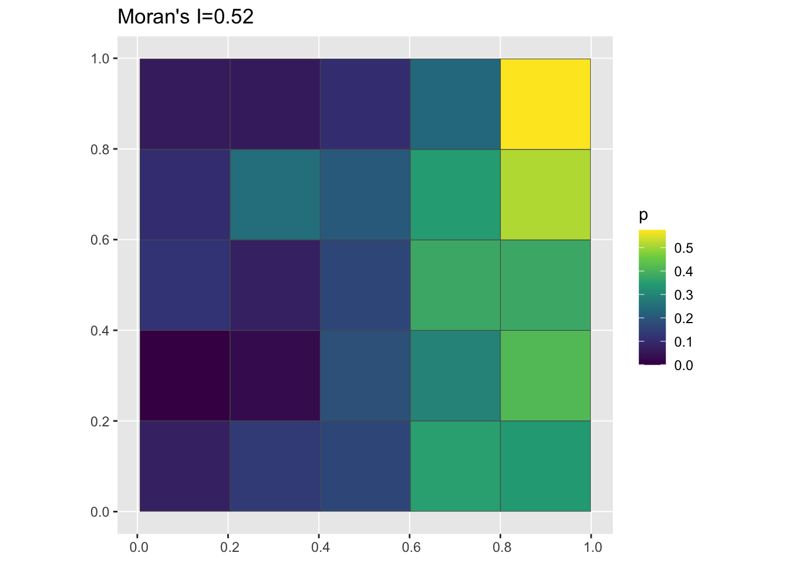
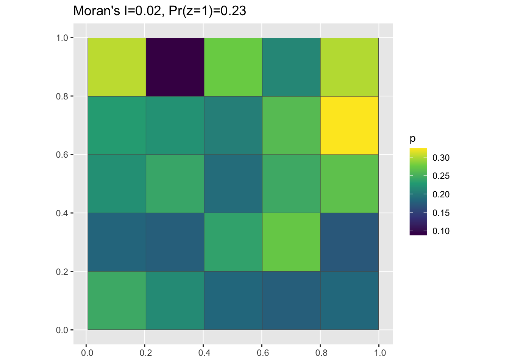
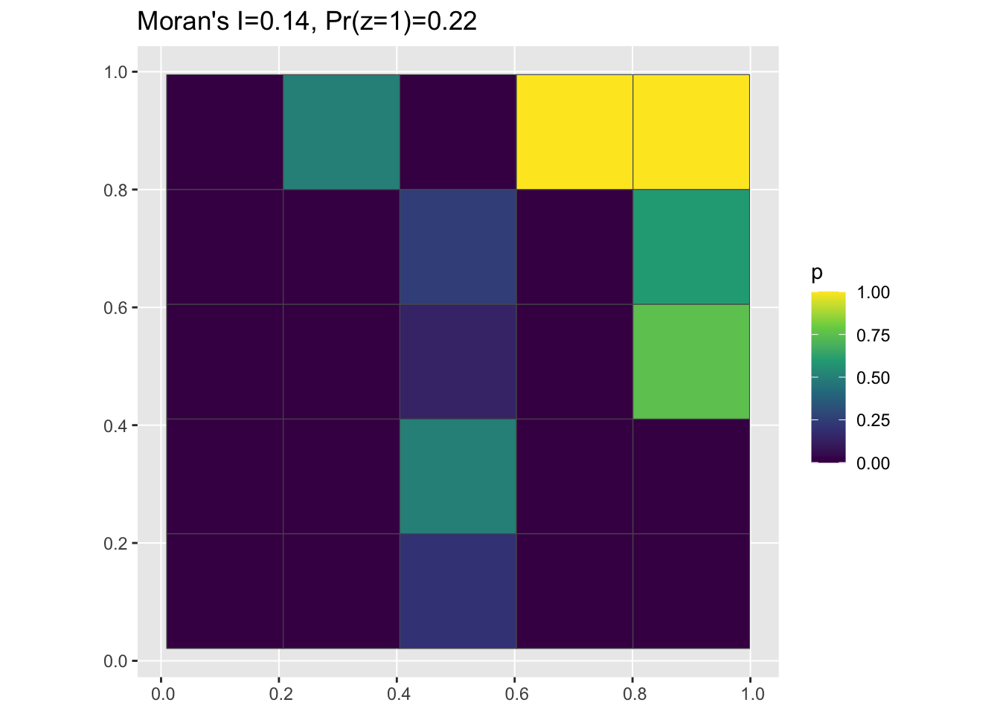

knitr::opts_chunk$set(message = FALSE, warning=FALSE, tidy=TRUE)
library(ggplot2)
library(sf)
library(dplyr)
library(spdep)Coming to grips with complete spatial randomness
Introduction
The point of this tutorial is to introduce you to two key, but related, concepts in spatial analysis:
Aggregating data from points to grid cells or polygons. This is often done to create summaries of an outcome of interest over small areas.
Calculating a summary statistic from the aggregated data and comparing the observed distribution to one exhibiting complete spatial randomness.
To try this tutorial on your own, download and unzip this zipfile and open up your R or RStudio session in the resulting directory. You can then either render the entire document or work through it one code cell at a time.
Set up the environment
Generate some data
This function will generate n points which are scattered uniformly at random around a unit square (i.e. a square with an area of one). The parameter base_p controls the baseline probability of the outcome of interest - e.g. the presence of a disease - occurring at the bottom left corner of the square,i.e. where x = 0, and y = 0. The parameters or_x and or_y are odds ratios representing the increase in the probability of having the outcome z=1 as you move rightwards (from x = 0 to x = 1) and upwards (from y = 0 to y = 1) respectively. In other words, the probability of an individual being a case or a control can be written as:
\[ Pr(z_i = 1 | x_i, y_i) = logit^{-1}(\alpha + \beta_x x_i + \beta_y y_i) \tag{1}\]
Where \(logit^{-1}\) represents the inverse logit function, \(\beta_{x}\) is the log-odds ratio associated with a 1-unit change in the x coordinate of individual i, \(\beta_{y}\) is the log odds-ratio associated with a 1-unit change in the y coordinate for individual \(i\), and \(\alpha\) is the log-odds of being a control (\(z=1\)) when \(x=0\) and \(y=0\). We can wrap this all up in the function below where or_x = \(exp(\beta_x)\), or_y = \(exp(\beta_y)\), and base_p = \(logit^{-1}(\alpha)\):
clusteredOutcomeData <- function(base_p = 0.1, or_x = 10, or_y = 10, n = 1000) {
df <- data.frame(x = runif(n), y = runif(n))
pt_logit <- qlogis(base_p) + log(or_x) * df$x + log(or_y) * df$y
pt_p <- plogis(pt_logit)
df$z <- rbinom(nrow(df), 1, pt_p)
return(df)
}When the values of both of these parameters are high, the probability of having a positive case should be greatest in the top-right corner of the square. Lets take a look and see if this is the case:
df <- clusteredOutcomeData(0.05, 20, 1, 1000)
g <- ggplot(df, aes(x = x, y = y)) + geom_point(aes(colour = z)) + facet_wrap(~z) +
ggtitle(paste0("Pr(z=1)=", round(sum(df$z)/nrow(df), 2)))
plot(g)

In this setup the risk of being a case is clearly higher in the top-right vs. the left. In the next section, we’ll work on aggregating these data up to a grid cell and calculating a descriptive spatial statistic, in this case Moran’s I.
Try making some patterns!
Play with the values of base_p, or_x and or_y above to get a feel for how these parameters impact the spatial patterning of the outcome. Also try 0 < OR < 1 for the x and y values and see how that impacts the pattern.
Aggregating from Points to Grid Cells
The function below takes a data frame with columns x, y and z with values representing the x,y coordinates and disease outcome, respectively, assigns points to grid cells, and then counts up the proportion of individuals in each cell are a case. It then returns an sf data frame we can use for plotting:
pointToGrid <- function(df, n = 5) {
g <- st_as_sf(df, coords = c("x", "y"))
a <- st_make_grid(g, what = "polygons", n = n) %>%
st_sf
a$cell <- 1:nrow(a)
pp <- st_join(g, a, st_intersects)
z_grid <- as_tibble(pp) %>%
group_by(cell) %>%
summarize(n = sum(z), p = sum(z)/n())
aa <- left_join(a, z_grid)
return(aa)
}Calculating Moran’s I
The function below will calculate Moran’s I for a given grid. For more information on this function, please see this tutorial where it is described in more detail:
moranFromSF <- function(x, sfdf, style = "B") {
nb <- poly2nb(sfdf)
lw <- nb2listw(nb, style = style, zero.policy = TRUE)
mi <- moran(x, lw, length(nb), Szero(lw), NAOK = TRUE)$I
return(mi)
}Plotting
The code below uses the function we just defined to aggregate the data we generated above to a 5 x 5 grid, plot the proportion cases vs. controls in each grid cell, and label the plot with the estimated value of Moran’s I:
pg <- pointToGrid(df, n = 5)
data_mi <- round(moranFromSF(pg$p, pg), 2)
g <- ggplot(pg) + geom_sf(aes(fill = p)) + scale_fill_viridis_c() + ggtitle(paste0("Moran's I=",
data_mi))
plot(g)
Change the number of cells
The parameter n in the function above controls the number of cells in each direction, so n=5 will result in \(n^2 = 25\) cells, n=10 will result in 100 cells, etc. Try different values of n and see how they impact the visual pattern of the grid as well as the value of Moran’s I. Note that grayed out cells are those with NA values, i.e. ones where there are no points (cases or controls) present.
Assessing how structured the data are using permutation testing
Our goal in this section is to introuce the idea of random permutation testing as a way of analyzing how likely the observed data are to have been generated by a scenario in which there is no spatial structure. Remember that we used a logistic regression model (see Equation 1) in which the probability of being a case (\(z_i = 1\)) is a function of an individual’s x and y coordinates to generate the input data.
Of course, with real-world data, we don’t know how the data were generated: the whole point of statistical modeling and testing is to try to figure that out! One way to do this is to ask if the data are consistent with a world in which there is no spatial structure at all. In this case, that would mean that the probability of being a case or a control is unaffected by spatial location, i.e. generated from a model like this:
\[ Pr(z_i = 1 | x_i, y_i) = \alpha \tag{2}\]
Where \(logit^{-1}(\alpha)\) is the population-level probability that an individual is a case. To assess this, we want to set up a situation where we have the exact same number of cases as in our observed data, the locations of all individuals remain the same, and the geometry of our map stays the same, but only the relationship between spatial location and case vs. control status is broken. To do this, we can randomly permute the case/control labels on our individuals, generating a large number of counterfactual datasets in which the data are consistent with the model in Equation 2. If they are, we can reject our (rather weak) null hypothesis that our data come from a world with no spatial structure.
Permuting the data
The function below does just that - it takes the input data and shuffles the values of the case/control outcome so that they no longer have a spatial pattern:
randomizeOutcome <- function(df) {
new_df <- df
new_df$z <- sample(df$z, size = nrow(df), replace = FALSE)
return(new_df)
}When we plot the randomized data, we can see now that the strong clustering pattern at the beginning (see Figure 1) has been disrupted but that the proportion of individuals that are cases remains the same:
random_df <- randomizeOutcome(df)
g <- ggplot(random_df, aes(x = x, y = y)) + geom_point(aes(colour = z)) + facet_wrap(~z) +
ggtitle(paste0("Pr(z=1)=", round(sum(random_df$z)/nrow(random_df), 2)))
plot(g)And we can use the functions we defined earlier to aggregate up from the randomized data to grid cells, calculate Moran’s I, and plot:
pg <- pointToGrid(random_df)
mi <- round(moranFromSF(pg$p, pg), 2)
g <- ggplot(pg) + geom_sf(aes(fill = p)) + scale_fill_viridis_c() + ggtitle(paste0("Moran's I=",
mi, ", Pr(z=1)=", round(sum(random_df$z)/nrow(random_df), 2)))
plot(g)
Approximating the sampling distribution of spatially random data
Here‚Äôs where the rubber meets the road üõ£. We will repeat the randomization above a large number of times (careful, as the number of trials increases, so does the runtime), save the value of Moran‚Äôs I for each randomized dataset, and then compare the randomized values to the ‚Äòtrue‚Äô one.
Generate Some Data
First, we’ll generate and visualize the structured data again:
df <- clusteredOutcomeData(0.01, 20, 20, 100)
pg <- pointToGrid(df)
data_mi <- round(moranFromSF(pg$p, pg), 2)
g <- ggplot(pg) + geom_sf(aes(fill = p)) + scale_fill_viridis_c() + ggtitle(paste0("Moran's I=",
data_mi, ", Pr(z=1)=", round(sum(df$z)/nrow(df), 2)))
plot(g)
Now we’ll generate a large number of datasets which have the same number of cases and controls and where the points are all in the same locations, but the geographic distribution of case and control statuses is randomly distributed:
n_trials <- 1000
mi_vals <- rep(0, n_trials)
g <- st_as_sf(df, coords = c("x", "y"))
a <- st_make_grid(g, what = "polygons", n = 5) %>%
st_sf
a$cell <- 1:nrow(a)
pp <- st_join(g, a, st_intersects) %>%
as_tibble %>%
select(z, cell)
nb <- poly2nb(a)
lw <- nb2listw(nb, style = "B", zero.policy = TRUE)
for (i in 1:n_trials) {
random_df <- randomizeOutcome(pp) %>%
group_by(cell) %>%
summarize(p = sum(z)/n())
tmp_pg <- left_join(a, random_df)
mi_vals[i] <- moran(tmp_pg$p, lw, length(nb), Szero(lw), NAOK = TRUE)$I
}Comparing randomized data to observed data
Let’s re-generate the clustered data from before and then compare it to some randomized values:
data_mi <- round(moranFromSF(pg$p, pg), 2)
p <- sum(mi_vals >= data_mi)/length(mi_vals)
g <- ggplot() + geom_histogram(aes(x = mi_vals), binwidth = 0.025) + xlab("Moran's I value") +
geom_vline(xintercept = data_mi, colour = "red") + geom_vline(xintercept = median(mi_vals),
colour = "green") + ggtitle(paste0("Randomized values of Moran's I vs. observed (pr <=",
p, ")"))
plot(g)
Try patterns with weak or noisy clustering
Modify the values of or_x and or_y to make the clustering in the simulated data weaker (i.e. make these paramters smaller). You can also reduce the total number of points (n) to see how easy it is to distinguish between ‘true’ clustering and random noise using a smaller dataset.
Citation
BibTeX citation:
@online{zelner2023,
author = {Zelner, Jon},
title = {Coming to Grips with Complete Spatial Randomness},
date = {2023-03-09},
url = {https://zelnotes.io/posts/csr},
langid = {en}
}
For attribution, please cite this work as:
Zelner, Jon. 2023. “Coming to Grips with Complete Spatial
Randomness.” March 9, 2023. https://zelnotes.io/posts/csr.